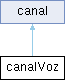

Representa um canal de voz. Essa classe é derivada da classe "canal" e as funções aqui presentes são específicas para os canais de voz. Mais...
#include <canalVoz.h>
Diagrama de hierarquia para canalVoz:

Membros Públicos | |
| canalVoz (std::string nome) | |
| Construtor padrão de canalVoz. | |
| ~canalVoz () | |
| Destrutor da classe canalVoz. | |
| std::string | tipoCanal () const override |
| Função que retorna o tipo do canal. | |
| void | enviarMensagem (int idUser, std::string mensg, std::string dataHora) override |
| Muda a variavel ultimaMensagem para a nova mensagem que foi enviada. | |
| std::vector< mensagem > | getMensagens () override |
| Função que retorna a unica mensagem do canal. | |
 Membros Públicos herdados de canal Membros Públicos herdados de canal | |
| canal () | |
| Construtor padrão da classe canal. | |
| canal (const std::string nomeCanal) | |
| Construtor da classe canal, com atributo. | |
| virtual | ~canal () |
| Destrutor de canal. | |
| std::string | getNomeCanal () |
| Função que obtém o nome do canal. | |
| virtual std::string | tipoCanal () const =0 |
| Função virtual que obtém o tipo do canal. | |
| virtual void | enviarMensagem (int idUser, std::string mensg, std::string dataHora)=0 |
| Função virtual que adiciona uma mensagem ao vector de mensagens. | |
| virtual std::vector< mensagem > | getMensagens ()=0 |
| Função virtual que retorna o vector de mensagens do canal. | |
Descrição detalhada
Representa um canal de voz. Essa classe é derivada da classe "canal" e as funções aqui presentes são específicas para os canais de voz.
Construtores e Destrutores
◆ canalVoz()
| canalVoz::canalVoz | ( | std::string | nome | ) |
◆ ~canalVoz()
| canalVoz::~canalVoz | ( | ) |
Destrutor da classe canalVoz.
15{}
Documentação das funções
◆ enviarMensagem()
|
overridevirtual |
Muda a variavel ultimaMensagem para a nova mensagem que foi enviada.
Função que muda a ultima mensagem do canal.
- Parâmetros
-
idUser O id do usuário que enviou a mensagem. mensg A mensagem a ser enviada. dataHora A data e hora da mensagem.
Implementa canal.
◆ getMensagens()
|
overridevirtual |
Função que retorna a unica mensagem do canal.
Função que retorna a mensagem presente no canal.
- Retorna
- um vector de 1 elemento mensagem
- Um vector contendo uma mensagem do canal.
Implementa canal.
39 {
40 std::vector<mensagem> m;
42 m.push_back(this->ultimaMensagem);
43 }
44 return m;
45}
std::string getConteudoMensagem()
Função que retorna o conteúdo da mensagem.
Definition: mensagem.cpp:39
◆ tipoCanal()
|
overridevirtual |
Função que retorna o tipo do canal.
- Retorna
- String com o tipo do canal
Implementa canal.
20 {
21 return "voz";
22};
A documentação para essa classe foi gerada a partir dos seguintes arquivos:
- C:/Users/jonat/concordo_LP/include/canalVoz.h
- C:/Users/jonat/concordo_LP/src/canalVoz.cpp